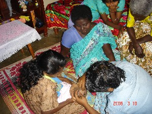
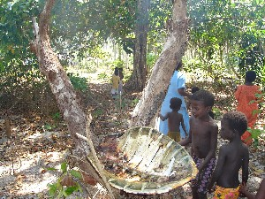

रीति-रिवाज़
ɑkɑkʰimilkolot आकाखीमील्कोलोत MORPH: ɑkɑ-kʰimil-kolot. N सं. the name which is given after the turtle-eating ceremony; कछुआ खाने वाला, कछुआ खाने की रस्म के बाद दिया जाने वाला नाम. SD: ritual, रीति-रिवाज़.
ɑkɑop आकाओप MORPH: ɑkɑ-op. Etym: Jeru; जेरू. N सं. a person who is under ritualistic diet restrictions or on fast during the post-puberty period; किशोरावस्था में परंपरा के अनुसार व्रत रखने वाला व्यक्ति या उपवासी. SD: ritual, रीति-रिवाज़.
ɑkɑyɑbɑ आकायाबा MORPH: ɑkɑ-yɑbɑ. Etym: Bea; बेया. N सं. fasting person, referring to a person who is under ritualistic diet restrictions or on fast during the post-puberty period; उपवासी. SD: ritual, रीति-रिवाज़.
ɑkop आकोप N सं. period, of abstinence from eating certain kinds of food items; कुछ प्रकार की खाद्य सामग्री नहीं खाने की समयावधि. SD: ritual, रीति-रिवाज़.
 ɑrɑoɖu आराओडू MORPH: ɑrɑ-oɖu. VAR: ɑrɑ-uɖu आराऊडू. N सं. a ritual observed one month after the death of a deceased; wake; एक प्रकार का कर्मकाण्ड जो किसी के मरने के एक महीने के बाद मनाया जाता है; मरने पर आयोजित होने वाला भोज. SD: ritual, रीति-रिवाज़, death, मृत्यु सम्बंधी.
ɑrɑoɖu आराओडू MORPH: ɑrɑ-oɖu. VAR: ɑrɑ-uɖu आराऊडू. N सं. a ritual observed one month after the death of a deceased; wake; एक प्रकार का कर्मकाण्ड जो किसी के मरने के एक महीने के बाद मनाया जाता है; मरने पर आयोजित होने वाला भोज. SD: ritual, रीति-रिवाज़, death, मृत्यु सम्बंधी.
ɑrɑoɖutɑle आराओडूताले MORPH: ɑrɑ-oɖu-tɑle. N सं. end, of mourning rituals; शोक प्रकट करने के कर्मकाण्डों की समाप्ति. SD: death, मृत्यु सम्बंधी, ritual, रीति-रिवाज़, time, समय.
ɑrɑuɖu आराऊडू MORPH: ɑrɑ-uɖu. N सं. fast observed on the death of a person; किसी व्यक्ति के मरने पर रखा जाने वाला रोज़ा. SD: ritual, रीति-रिवाज़, death, मृत्यु सम्बंधी.
 |
bɛcikluye बैचीकलूये MORPH: bɛc-ik-luye. N सं. tonsure; मुंडन. SD: ritual, रीति-रिवाज़. NT: Equivalent of the Hindu ‘mundan’ or head-shaving ceremony, performed on a 14-day old baby. A blade is now used for the ceremony, which was earlier performed with a piece of glass. The investigators were present for the ceremony of Jirake Jr. It was noticed that many traditional Hindu rituals have been incorporated in the ceremony, reflecting the influence of the mainstream culture on the Great Andamanese. However, unlike the Hindu custom of the barber performing the rituals, the community members themselves take part in shaving the infant’s head. In this case, it was done by Reya and Prem Devi, the non-tribal wife of Loka. 14 दिन के नवजात शिशु का मुंडन किया जाता है। आजकल ब्लेड का प्रयोग होता है पर प्राचीन काल में कांच के टुकड़े का प्रयोग होता था। जिराके जूनियर के मुंडन में हमारी टीम के सदस्य मौजूद थे। मुंडन संस्कार बहुत कुछ भारतीय हिन्दू पद्धति जैसे होते हैं हालांकि पूरे संस्कार में नाई का कोई महत्व नहीं है। समुदाय के लोग ही बच्चे का मुंडन करते हैं। जिराके का मुंडन रेया और प्रेम देवी (लोका की गैर-अण्डमानी पत्नी) ने किया था।.
boi2 बोई N सं. ritual; रीति-रिवाज़. SD: ritual, रीति-रिवाज़. SEE: boi1 ‘cooked’ ‘पका हुआ बोईhm:{1}’.
buliɑ बूलीआ N सं. a kind of song; एक प्रकार का गीत. SD: ritual, रीति-रिवाज़.
buliɑː बूलीआऽ N सं. fast that boys are supposed to observe; लड़कों के लिए रोज़ा. SD: ritual, रीति-रिवाज़.
 |
cokbijo चोकबीजो MORPH: cokbi-ijo. VAR: cokbi-kʰimil चोकबीखीमील. N सं. turtle-eating ceremony; कछुआ खाने का उत्सव. SD: ritual, रीति-रिवाज़.
eliu एलीऊ N सं. prenatal name; जन्म के पूर्व का नाम; अजन्मे शिशु का नाम. SD: ritual, रीति-रिवाज़, life, जीवन.
eʈɑpcebɑ एटापचेबा N सं. garland of the skulls of the dear dead worn by mourner; नरमुण्डों की माला जो मातम मनाने वाला पहनता है. SD: death, मृत्यु सम्बंधी, ritual, रीति-रिवाज़.
jiyɑ जीया N सं. song; गीत. SD: ritual, रीति-रिवाज़.
jo2 जो VAR: jɔ जौ. N सं. song; गीत. jo-bi-kun-i-me जोबीकूनीमे. Sing a song. गाना गाओ।. ʈʰ-ico-jo ठीचोजो. my song. मेरा गाना. SD: ritual, रीति-रिवाज़. SEE: jo1 ‘food’ ‘खाना जोhm:{1}’; jo3 ‘take’ ‘लेना जोhm:{3}’.
 jurɔe2 जूरौए VAR: jurɛ जूरै; juroy जूरोय; jurɔye जूरौये. N सं. fast; उपवास. SD: ritual, रीति-रिवाज़. SEE: jurɔe1 ‘dance’ ‘नाचना जूरौएhm:{1}’.
jurɔe2 जूरौए VAR: jurɛ जूरै; juroy जूरोय; jurɔye जूरौये. N सं. fast; उपवास. SD: ritual, रीति-रिवाज़. SEE: jurɔe1 ‘dance’ ‘नाचना जूरौएhm:{1}’.
jurɔytɑtoŋ जूरौयतातोङ MORPH: jurɔy-tɑtoŋ. N सं. dancing ground; नृत्य स्थल. SD: ritual, रीति-रिवाज़.
kʰimil1 खीमील N सं. friends of youth; chums; जवानी के दोस्त; यार. ɑkɑuno ukʰe ɑtʰire ʈʰico kʰimil be आकाऊनो ऊखे आथीरे ठीचो खीमील बे. The boy who is sitting there is my friend. जो लड़का वहां खड़ा है, वह मेरा दोस्त है।. SD: relationship, सम्बंध, ritual, रीति-रिवाज़. NT: The one who undergoes the turtle-eating or initiation ceremony. Children who have gone through the puberty ceremony together are addressed as ‘khimil’ by adults/parents. खिमिल उन दो किशोरों के लिए प्रयुक्त होता है जिन्होंने कछुआ खाने की रस्म साथ-साथ निभाई हो।. SEE: kʰimile ‘wife’s sister’s husband’ ‘साढू खीमीले ’; kʰimil2 ‘warm or hot’ ‘गर्म खीमीलhm:{2}’.
 |
kʰimiljo खीमील्जो MORPH: kʰimil-jo. Etym: North Andaman; उत्तरी अण्डमान. N सं. turtle-eating ceremony; कछुआ खाने का उत्सव. SD: ritual, रीति-रिवाज़.
kʰimiltɑl खीमीलताल N सं. name, by which all boys call themselves after undergoing the turtle-eating ceremony; नाम, जिससे लड़के कछुआ खाने की रस्म के बाद एक-दूसरे को बुलाते हैं. SD: ritual, रीति-रिवाज़.
kɔlɔt कौलौत N सं. marriage; शादी. ebɔi-kɔlɔt एबौईकौलौत. newly married bride. नई-नवेली दुल्हन. SD: ritual, रीति-रिवाज़.
neboitotbuliɑ नेबोईतोतबूलीआ MORPH: neboit-ot-buliɑ. N सं. song sung at the time of marriage; शादी के समय गाया जाने वाला गाना. SD: ritual, रीति-रिवाज़.
okotɑliŋkolɔt ओकोतालीङकोलौत MORPH: okotɑliŋkolɔt. Etym: North Andaman; उत्तरी अण्डमान. N सं. boy, post puberty; तरुण. SD: ritual, रीति-रिवाज़.
tɑnɖutɑrɑjuroi तानडूताराजूरोई MORPH: tɑn-ɖut-ɑrɑ-juroi. N सं. puberty ceremony; यौवनारंभ समारोह. SD: ritual, रीति-रिवाज़.
 tɛrʈʰiu तैरठीऊ MORPH: tɛr-ʈʰiu. N सं. covering on the dancing ground; नृत्य स्थल का आवरण. SD: ritual, रीति-रिवाज़.
tɛrʈʰiu तैरठीऊ MORPH: tɛr-ʈʰiu. N सं. covering on the dancing ground; नृत्य स्थल का आवरण. SD: ritual, रीति-रिवाज़.
toloɖu तोलोडू MORPH: tol-oɖu. Etym: Jeru; जेरू. N सं. a kind of white clay; एक प्रकार की सफ़ेद मिट्टी. SD: ritual, रीति-रिवाज़.
 utbuliɑ2 ऊत्बूलीआ MORPH: ut-buliɑ. VAR: utumbuliɑ ऊतूमबूलीआ. N सं. songs sung at death; मृत्यु पर गाए जाने वाले गाने. SD: death, मृत्यु सम्बंधी, ritual, रीति-रिवाज़. NT: These songs are sung when someone is going far away. The singing starts two days before the person’s departure. यदि कोई छोड़कर दूर देश जाने वाला हो तब ये गाने जाने से दो दिन पहले से गाये जाने लगते हैं।. SEE: utbuliɑ1 ‘fasting; feast (after fasting)’ ‘रोज़ा; भोज (रोज़ा के बाद) ऊत्बूलीआhm:{1}’.
utbuliɑ2 ऊत्बूलीआ MORPH: ut-buliɑ. VAR: utumbuliɑ ऊतूमबूलीआ. N सं. songs sung at death; मृत्यु पर गाए जाने वाले गाने. SD: death, मृत्यु सम्बंधी, ritual, रीति-रिवाज़. NT: These songs are sung when someone is going far away. The singing starts two days before the person’s departure. यदि कोई छोड़कर दूर देश जाने वाला हो तब ये गाने जाने से दो दिन पहले से गाये जाने लगते हैं।. SEE: utbuliɑ1 ‘fasting; feast (after fasting)’ ‘रोज़ा; भोज (रोज़ा के बाद) ऊत्बूलीआhm:{1}’.
 |
yɑdiɡumul यादीगूमूल़ MORPH: yɑdi-ɡumul. VAR: ɡumul-leke गूमूल्लेके. Etym: Bea; बेया. N सं. turtle-eating ceremony ; कछुआ खाने का उत्सव. SD: ritual, रीति-रिवाज़. NT: This is an important part of the initiation ceremony. यह जवानी के उत्सव का एक विशेष भाग है ।.